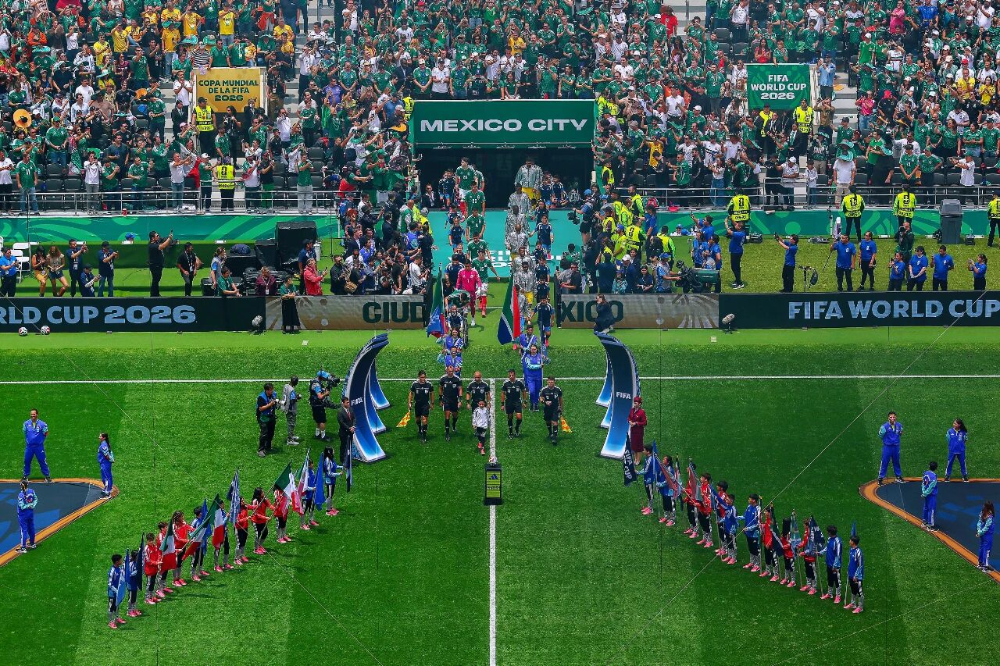
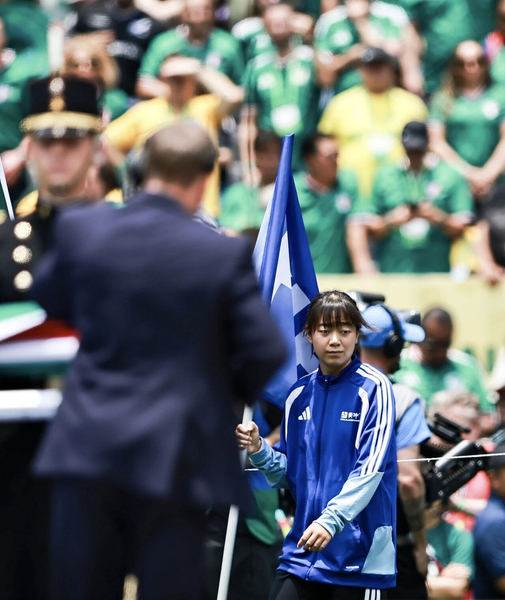
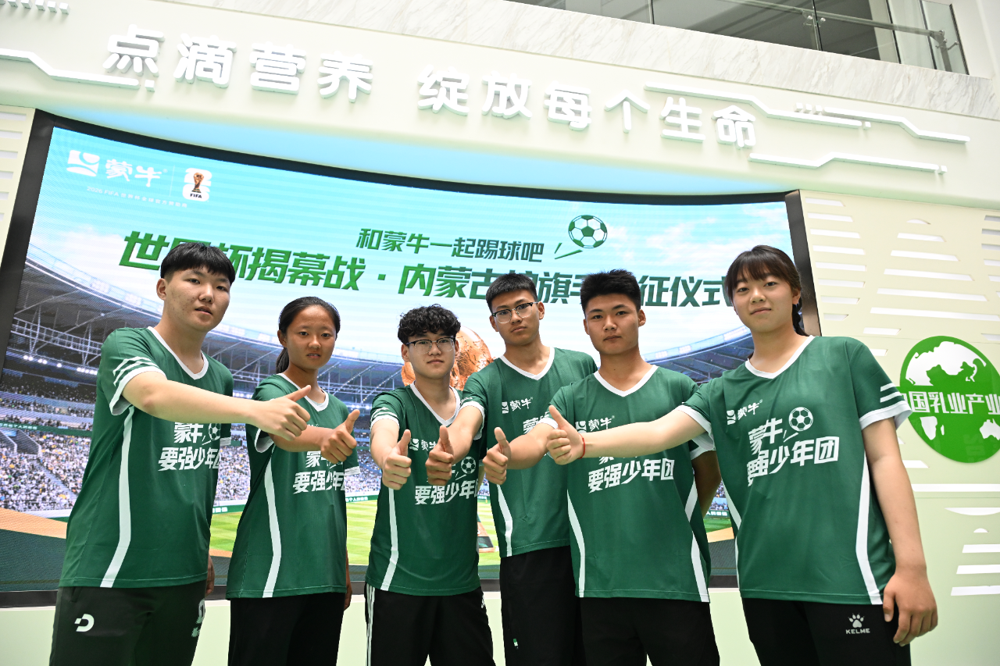

案例发生了什么



蒙牛将官方护旗手权益与品牌起源地及青少年足球连接。2026 揭幕战有 6 名来自内蒙古的少年进入墨西哥城赛场；品牌赛后复盘称，从 2018 到 2026 已连续三届世界杯将 600 余名中国青少年送上国际赛事舞台。案例页用出征合影、入场全景和场内近景还原从选拔到执行的链条。
案例启示
案例启示
关键动作
- 优先选择品牌奶源地内蒙古的青少年，使稀缺名额与长期地域身份相连。
- 把出征、培训、入场仪式和赛后回访组织成成长经历，而非一次门票抽奖。
- 用连续三届的规模口径说明项目延续性，同时保留名单、规则和效果的后续核验任务。
传播与商业机制
传播路径
以“官方赛事权益 / 青少年入场仪式”为资源起点，进入选拔、培训、入场仪式、纪录内容与校园传播，让赛事权益转化为用户可接触、可讨论或可参与的内容。
商业承接
不把曝光直接等同销售，重点观察报名、入选、完成场次、家庭反馈、媒体触达与后续成长，并区分品牌自报、平台数据与可独立核验结果。
可复用的方法青少年赛事权益只有形成透明选拔、完整体验、长期跟踪和基层回流，才会从稀缺福利沉淀为品牌社会资产。
适用条件、风险与证据
- 先明确目标是国内动销、出海认知、渠道关系还是授权商品，而不是全部都做。
- 球星或球队的赛果只是放大器，必须准备常态内容和转化出口。
- 对授权范围、地域、肖像和商品库存建立可追溯台账。
核验记录可将已核动作作为内部判断基础；涉及投放规模、销售结果或合作细则时，仍应以品牌、平台或权利方的一手发布为准。 当前记录：已核（蒙牛官网）；素材状态：已归档 4 张选拔、出征与揭幕战现场原图。
品牌与权威来源物料
这里只展示可追溯到品牌、权利方、官方账号或明确注明原始出处的真实物料；研究图卡不计入案例图片。

资料与来源
官方资料、结果数据与下一步
已验证事实
- 蒙牛官网确认 6 名来自内蒙古的青少年在 2026 世界杯揭幕战护送 FIFA 会旗入场，页面含出征合影、仪式全景和场内近景。
- 品牌赛后复盘口径称，2018—2026 连续三届世界杯已有 600 余名中国青少年走上国际赛事舞台。
- 本页只使用蒙牛官网的项目与现场原图，不使用无名单、无场次的通用儿童足球图片。
可追溯的结果
- 已有“揭幕战 6 人”和“三届 600 余人”的品牌口径，但未公开完整名单、地区分布、选拔报名量、培训时长、完成率和长期影响。
原始来源
来源链接优先指向品牌、权利方或持权媒体官方页面；品牌自述数据按原始定义记录，不视作独立审计结果。